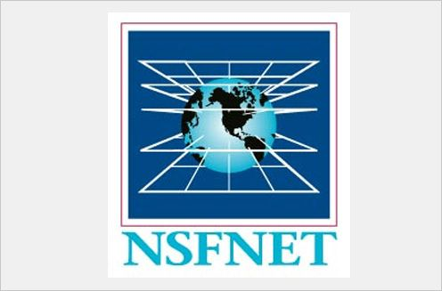

В 1969 году в США были объединены в одну сеть несколько компьютеров оборонных и научно-исследовательских центров. Первоначальная цель этой сети заключалась в том, чтобы дать возможность университетам США и сотрудникам Министерства Обороны коммуницировать и совместно использовать вычислительные ресурсы мощных компьютеров (серверов), которые находились на достаточно большом расстоянии. Через несколько лет ARPANET вышла за рамки военных целей и стала использоваться многими другими учёными
В 1973 году к сети были подключены первые иностранные организации из Великобритании и Норвегии. Таким образом, ARPANET стала международной сетью
Протокол - это стандартный набор правил, определяющих принципы обмена данными между двумя и более компьютерами
Необходимость их разработки была связана с тем, что в состав сети входили компьютеры с различными архитектурами и операционными системами.
В 1983 году сеть ARPANET перешла с протокола NCP на стек протоколов TCP/IP, который применяется до сих пор. Основной недостаток NCP состоял в том, что он использовал передачу данных без гарантии доставки сообщений.
В 1971 году Рэй Томлинсон разрабатывает систему e-mail (электронной почты). Он же предложил использовать значок @ ("собака") в обозначениях e-mail-адресов для электронной корреспонденции. Вскоре появляются первые списки почтовой рассылки, новостные группы и доски объявлений.
В 1984 году была разработана система доменных имён. Это было сделано для удобства пользователей, ведь гораздо легче запомнить осмысленный адрес, нежели набор цифр (IP-адрес) 
В 1986 году была создана сеть NSFNET, которая имела гораздно большую пропускную способность, чем ARPANET. Эта сеть была доступна только для зарегистрированных пользователей. С этого времени название "Internet" начало постепенно переходить к этой сети.
В 1991 году стала публичная доступна певая программа веб-браузер, которая называлась Worldwideweb. В этом же году была опубликована предварительная версия описания протокола HTTP. В 1995 году служба World Wide Web стала основным поставщиком информации в Интернета, именно она и создала современный облик Интернета.